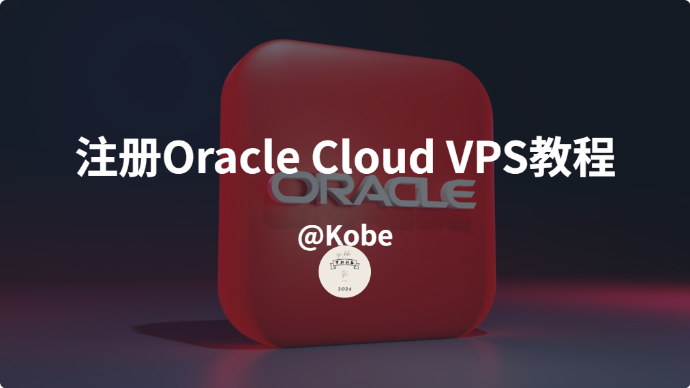

甲骨文云永久免费VPS注册教学
甲骨文云（Oracle Cloud）作为全球领先的云计算服务商，其永久免费VPS凭借稳定的性能和零成本特性，成为开发者与个人用户的首选。本文结合实测经验与全网最新信息，总结出一套成功率极高的注册攻略，助你轻松“白嫖”全球高性能云服务器！
一、甲骨文云VPS的核心优势
- 永久免费资源：提供2-4个总计4核24G的ARM/AMD实例、200GB存储、10TB月流量，满足中小型项目需求。
- 全球高速节点：覆盖日本、韩国、美国等热门区域，延迟低至50ms（以东京/首尔为例）。
- 企业级稳定性：依托甲骨文全球数据中心，99.95% SLA可用性保障，远超同类免费服务。
- 灵活升级机制：免费资源可无缝升级为付费实例，适合长期项目扩展。
二、永久免费账号的隐藏福利
- 30天试用期：赠送300美元额度，可体验高阶配置（如24核AMD/80核ARM）。
- 多服务集成：包含数据库、负载均衡、监控工具等企业级功能。
- 无时间限制：即使试用期结束，基础免费资源仍可无限期使用。
三、中国大陆用户专属申请入口
官方直链：
![👉]( Oracle Cloud永久免费计划
（注意：需通过此链接进入才能看到中文界面与免费资源入口）
四、申请前的必备材料
- 信用卡：推荐光大银行美国运通数字信用卡（实测一次通过），备选招行全币种、中行跨境通（需支持预扣款1.38新加坡元）。
避坑提示：虚拟卡/预付卡100%失败！建议优先选择运通卡或VISA/MasterCard双币卡。_ - 邮箱：QQ/163邮箱易。
- 手机号：国内号码可接收验证码，无需海外号。
- 网络环境：使用手机5G网络（关闭代理），IP地址与注册地区一致。
五、2025年最新注册步骤
步骤1：填写基础信息
- 访问官网后点击“立即免费试用”，国家选择中国，邮箱建议与企业信息关联（如用个人姓名拼音注册）。
- 邮箱验证环节，点击收到的验证链接，确保信号稳定。
步骤2：输入密码+地址信息
- 地址填第一行就行，全部英文翻译，和IP地址一致，和银行卡预留地址一致！
- 关键细节：和IP地址一致，和银行卡预留地址一致！
步骤3：选择数据中心
- 优先推荐：美国凤凰城（us-phoenix-1）
- 避坑指南：日本东京（ap-tokyo-1）、韩国首尔（ap-seoul-1）性能可能受限，新加坡不要选，开不出来！热门区域可能显示“容量不足”。
步骤4：绑定信用卡
- 在付款方式页面输入信用卡信息（姓名、卡号、有效期、CVV），地址需与银行预留信息一致25。
- 关键细节：系统会预扣1.38新加坡元（约6.5元人民币），30分钟内自动退回，扣款成功≠注册成功！
步骤5：创建实例
- 控制台选择“创建实例”，配置如下：
- 镜像：Ubuntu 22.04 LTS（兼容性最佳）
- 规格：4H+24内存+200G硬盘内（永久免费机型）（预估价格不用管！）
- 密钥对：生成SSH密钥并下载保存。
- 等待1-5分钟，实例状态变为“运行中”即创建成功。
六、申请难度与避坑指南
- 成功率因素：真实信息（80%）+ 信用卡类型（15%）+ IP干净度（5%）25。
- 常见失败原因：
- 信用卡未通过3D验证（建议提前开通境外支付权限）
- 使用代理导致IP与地址不符（关闭VPN，用5G网络直连）
- 区域资源不足（凌晨时段刷新或切换冷门区域）。
七、信用卡推荐清单
| 银行 | 卡种 | 优势 | 成功率 |
| 光大银行 | 美国运通数字信用卡 | 无实体卡，支持一键锁卡 | ★★★★★ |
| 招商银行 | 全币种国际信用卡 | 免货币转换费 | ★★★★☆ |
| 中国银行 | 长城跨境通借记卡 | 支持外币预扣款 | ★★★☆☆ |
总结
甲骨文云免费VPS的申请虽有一定门槛，但只要遵循“真实信息+合规信用卡+干净IP”三大原则，成功率将大幅提升。建议首次申请选择非热门区域，成功后可通过CLI工具自动化创建高性价比ARM实例（教程参考）。如遇问题，欢迎在评论区交流，博主将解答高频疑难！
1、不要开启VPN，确保真实网络环境，可用手机流量，或家庭WiFi。（国内会比较慢）
2、全套真实信息，不要生成的虚假身份。
3、银行卡需要是信用卡，预付卡不支持。
4、身份地址信息必须和银行卡信息，手机号一致，确保三位一体互相匹配。
5、建议用国内邮箱如：QQ，微软，163等无需翻墙的邮箱。